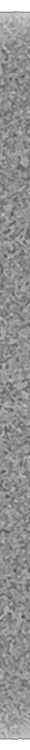
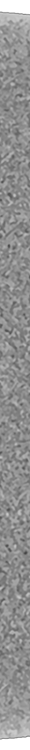
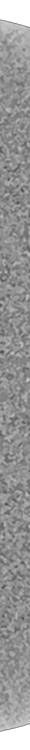

70175,0, Sectional y-axis advanced capture performed in 3D Slicer and Gaugecam by Lauren Russo on 24 March 2026. Source material: X-ray computed tomography scans of Apollo Lunar Sample 70175,0 (Pyroclastic-glass Breccia). Scanned for Astromaterials 3D at the University of Texas High-Resolution X-ray CT Facility by Matthew Colbert on 17 November 2017.
70175,0, Sectional x-axis advanced capture performed in 3D Slicer and Gaugecam by Lauren Russo on 24 March 2026. Source material: X-ray computed tomography scans of Apollo Lunar Sample 70175,0 (Pyroclastic-glass Breccia). Scanned for Astromaterials 3D at the University of Texas High-Resolution X-ray CT Facility by Matthew Colbert on 17 November 2017.
70175,0, Sectional z-axis advanced capture performed in 3D Slicer and Gaugecam by Lauren Russo on 24 March 2026. Source material: X-ray computed tomography scans of Apollo Lunar Sample 70175,0 (Pyroclastic-glass Breccia). Scanned for Astromaterials 3D at the University of Texas High-Resolution X-ray CT Facility by Matthew Colbert on 17 November 2017.